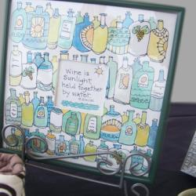
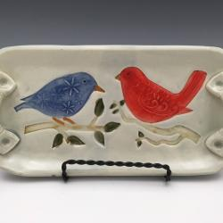
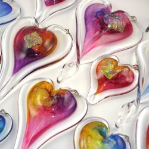

Local artist work
Rotating pieces throughout the tasting room.
Learn about the winery’s beginnings, browse art highlights, and find partners and press links.
Founded in 2007 by Margaret and Michael Lytz.
The Vineyard is named after Margaret’s late daughter Sarah, who was killed in a tragic auto accident in 1998. The fields are tended and cared for in her memory, reshaping abandoned fields into a countryside once lost—but not forgotten.
Browse unique art in the tasting room while enjoying wine.
Sarah’s Vineyard features blown glass, pottery, jewelry, purses, tiles, pen & ink watercolors, collages, and photography for sale. We support local and national artists.

Rotating pieces throughout the tasting room.

Handcrafted ceramics and functional art.

Blown glass pieces and seasonal colors.
Local vendors and nearby favorites.
| Partner | Details |
|---|---|
| The Silver Fern Bed & Breakfast | 1856 Main Street, Peninsula, OH 44264 · 330-417-7194 · Website |
| Courtyard Marriott – Stow | 4047 Bridgewater Parkway, Stow, OH 44224 · 330-945-9722 · Website |
| Acme Catering | 3235 Manchester Rd, Akron, OH 44319 · 330-645-6222 · Website |
| Hudson’s Catering | 80 N. Main St, Hudson, OH 44236 · 330-294-0675 · Website |
| Moe’s Restaurant | 2385 Front St, Cuyahoga Falls, OH 44221 · 330-928-6600 · Website |
Planning an event? Start on Visit.